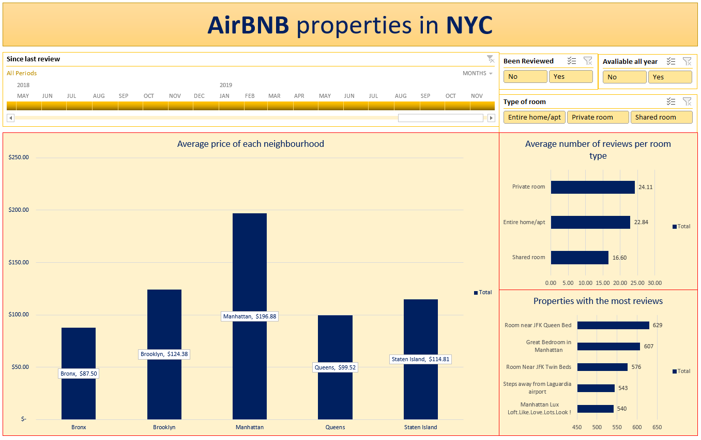

Data Analyst Portfolio
In an extensive project involving the NYC Airbnb dataset, I adeptly managed data by meticulously refining it in Excel, ensuring precision and integrity. This thorough data cleaning process involved rectifying inconsistencies, eliminating duplicates, and validating information to establish a reliable foundation. Subsequently, I translated the refined data into an interactive dashboard, employing data visualization techniques to craft an intuitive interface. This dashboard seamlessly highlighted top-tier lodging options, offering dynamic visualizations and filters that enabled users to make well-informed decisions based on pricing, amenities, and neighborhood preferences. To download the data and the dashboard, please refer to: GitHub
